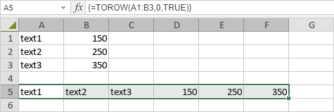

TOROW Funkcija
TOROW funkcija je jedna od lookup i reference funkcija. Koristi se da vrati niz kao jedan red.
Sintaksa
TOROW (array, [ignore], [scan_by_column])
TOROW funkcija ima sledeće argumente:
| Argument | Opis |
|---|---|
| array | Niz ili referenca koja se vraća kao red. |
| ignore | Koristi se da se odredi da li treba ignorisati određene tipove vrednosti. Podrazumevano je da se ne ignorišu vrednosti. Sledeće vrednosti se koriste: 0 za zadržavanje svih vrednosti (podrazumevano); 1 za ignorisanje praznih ćelija; 2 za ignorisanje grešaka; 3 za ignorisanje praznih ćelija i grešaka. |
| scan_by_column | Koristi se za skeniranje niza po kolonama. Po default-u, skeniranje niza se vrši po redovima. Skeniranje određuje da li su vrednosti raspoređene po redovima ili kolonama. Logička vrednost (TRUE ili FALSE). |
Napomene
Ako je scan_by_column izostavljen ili FALSE, niz se skenira po redovima. Ako je TRUE, niz se skenira po kolonama.
Napomena: ovo je array formula. Za više informacija pročitajte članak Insert array formulas.
Kako primeniti TOROW funkciju.
Primeri
Slika ispod prikazuje rezultat koji vraća TOROW funkcija.
